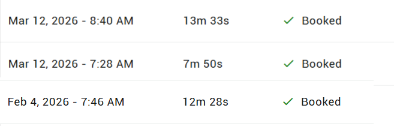

Before the AI. After the AI.
One independent optometry practice in Ida Grove, IA entered their baseline at setup. Here is what happened.
after launch
completely off-hours
Q1 2026
duration
"I did not realize how many calls we were missing. I thought we were covered. Then I saw the number. Almost one in five calls was going unanswered. Those are patients who called us, did not get through, and found someone else. We had no idea."
84% of calls come in when no one is available to answer.
At this practice, 36 of 43 total calls in Q1 2026 came in off-hours, before the office opened, during lunch, or after 5pm. Without the AI, 84% of their call volume would have gone to voicemail.
Most would not have called back. The practice would never have known they called.
84% off-hours call volume — observed Q1 2026
Booked before the office opens.
Calls at 7:17am. 7:28am. 7:33am. All handled. All documented. All appointment requests submitted before a single staff member arrived at work.
These patients did not fill out a form and wait. They called, got an immediate response, and had their appointment booked before breakfast.
Early morning bookings — observed call log